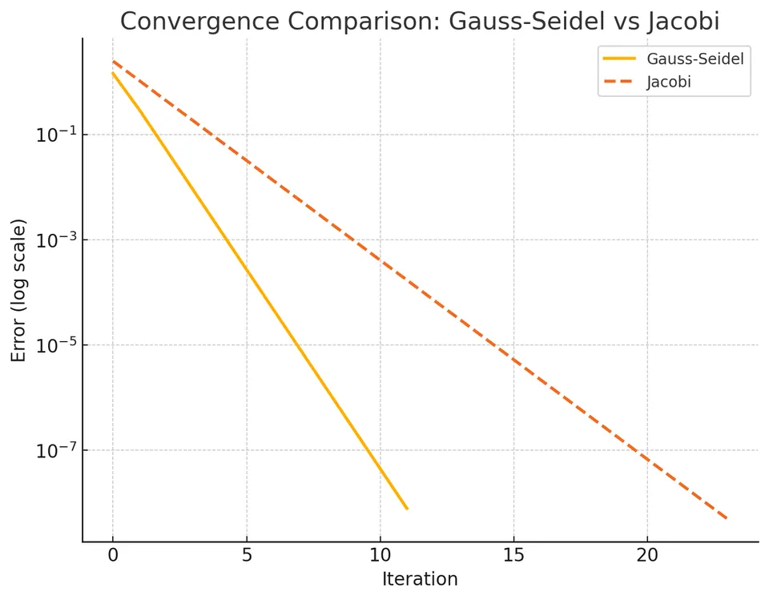

The Gauss-Seidel method is a classical iterative method for solving systems of linear equations of the form $A\mathbf{x} = \mathbf{b}$, where $A$ is an $n \times n$ matrix, $\mathbf{x}$ is the vector of unknowns $(x_1, x_2, \ldots, x_n)$, and $\mathbf{b}$ is a known vector. Unlike direct methods such as Gaussian elimination, iterative methods build successively better approximations to the solution. The Gauss-Seidel method specifically uses previously computed (and more up-to-date) components of the solution vector within the same iteration, resulting in typically faster convergence than the Jacobi method.
Physically and numerically, the idea behind the Gauss-Seidel method can be interpreted as performing a sequence of "relaxations": starting from some initial guess, the method progressively reduces the residual (the discrepancy $A\mathbf{x}-\mathbf{b}$) by adjusting one variable at a time, immediately using the most recent updates. The algorithm is simple to implement and is widely used for large and sparse systems, such as those arising in discretized partial differential equations, engineering simulations, and large-scale scientific computations.

Consider a system of $n$ linear equations with $n$ unknowns:
$$A\mathbf{x} = \mathbf{b},$$ where
$$ A = \begin{bmatrix} A_{11} & A_{12} & \cdots & A_{1n} \\ A_{21} & A_{22} & \cdots & A_{2n} \\ \vdots & \vdots & \ddots & \vdots \\ A_{n1} & A_{n2} & \cdots & A_{nn} \end{bmatrix} $$
$$ \mathbf{x} = \begin{bmatrix} x_1 \\ x_2 \\ \cdots \\ x_n \end{bmatrix} $$
$$ \mathbf{b} = \begin{bmatrix} b_1 \\ b_2 \\ \cdots \\ b_n \end{bmatrix} $$
If $A$ is nonsingular (invertible), there exists a unique solution $\mathbf{x}^*$ such that $A\mathbf{x}^* = \mathbf{b}$.
The Gauss-Seidel method arises from decomposing the matrix $A$ into a lower-triangular part, a strict upper-triangular part, and possibly a diagonal part. One common decomposition is:
$$A = L + D + U$$
where:
Another way to write the update rule is to solve each equation for the unknown on its diagonal in terms of the other unknowns. The Gauss-Seidel iteration formula is typically given as:
$$x_i^{(k+1)} = \frac{b_i - \sum_{j=1}^{i-1} A_{ij} x_j^{(k+1)} - \sum_{j=i+1}^{n} A_{ij} x_j^{(k)}}{A_{ii}},$$ for $i = 1, 2, \ldots, n$.
In other words, when computing $x_i^{(k+1)}$, all the updated values $x_1^{(k+1)}, \ldots, x_{i-1}^{(k+1)}$ are already used, while $x_{i+1}^{(k)}, \ldots, x_n^{(k)}$ remain from the previous iteration.
Starting from the linear system $A\mathbf{x} = \mathbf{b}$, write the $i$-th equation explicitly:
$$A_{ii} x_i + \sum_{\substack{j=1 \\ j \neq i}}^{n} A_{ij} x_j = b_i.$$
Rearranging for $x_i$, we get:
$$x_i = \frac{b_i - \sum_{j \neq i} A_{ij} x_j}{A_{ii}}.$$
The essence of the Gauss-Seidel method is to "sweep" through the equations in a certain order (usually $i = 1, 2, \ldots, n$), and for each $i$-th equation, replace $x_i$ with the newly computed value. The key difference from the Jacobi method is that as soon as we compute $x_i^{(k+1)}$, we use this updated value in subsequent computations within the same iteration step $k+1$. Thus, for the iteration step $k+1$:
The process is essentially a fixed-point iteration. Under certain conditions, such as $A$ being strictly diagonally dominant or symmetric positive definite, this iteration converges to the true solution $\mathbf{x}^*$.
Step-by-step procedure:
I. Initialization: Start with an initial guess $\mathbf{x}^{(0)} = (x_1^{(0)}, x_2^{(0)}, \ldots, x_n^{(0)})^\top$. A common choice is $\mathbf{x}^{(0)} = \mathbf{0}$ or a vector of small random values.
II. Iterative Update: For iteration $k = 0, 1, 2, \ldots$ until convergence:
For $i = 1$ to $n$:
$$x_i^{(k+1)} = \frac{b_i - \sum_{j=1}^{i-1} A_{ij} x_j^{(k+1)} - \sum_{j=i+1}^{n} A_{ij} x_j^{(k)}}{A_{ii}}.$$
III. Convergence Check: After completing the update for all $i$, check if the solution has converged. A common convergence criterion is to check the norm of the residual $\|A\mathbf{x}^{(k+1)} - \mathbf{b}\|$ or the difference between successive iterates $\|\mathbf{x}^{(k+1)} - \mathbf{x}^{(k)}\|$. If this measure is less than a prescribed tolerance $\varepsilon$, stop; otherwise, proceed to the next iteration.
IV. Output: Once the loop terminates, $\mathbf{x}^{(k+1)}$ is considered the converged solution.
Given System:
$$ \begin{aligned} 5x - y &= 6, \\ 7x + 8y &= 20. \end{aligned} $$
This can be expressed in matrix form as:
$$ A = \begin{bmatrix} 5 & -1 \\ 7 & 8 \end{bmatrix}, \quad \mathbf{x} = \begin{bmatrix} x \\ y \end{bmatrix}, \quad \mathbf{b} = \begin{bmatrix} 6 \\ 20 \end{bmatrix} $$
We have two equations:
I. $5x - y = 6$
II. $7x + 8y = 20$
Step-by-Step Iteration:
Initialization:
$$x^{(0)} = 0, y^{(0)} = 0$$
Iteration 1 ($k=0$ to $k=1$):
Update $x$:
$$x^{(1)} = \frac{6 - (-1)\cdot y^{(0)}}{5} = \frac{6 - 0}{5} = \frac{6}{5} = 1.2.$$
Update $y$:
Here, we use the newly computed $x^{(1)} = 1.2$:
$$y^{(1)} = \frac{20 - 7 \cdot (1.2)}{8} = \frac{20 - 8.4}{8} = \frac{11.6}{8} = 1.45.$$
After first iteration:
$$x^{(1)} = 1.2, \quad y^{(1)} = 1.45.$$
Iteration 2 ($k=1$ to $k=2$):
Using $x^{(1)} = 1.2$ and $y^{(1)} = 1.45$:
Update $x$:
$$x^{(2)} = \frac{6 - (-1)\cdot(1.45)}{5} = \frac{6 + 1.45}{5} = \frac{7.45}{5} = 1.49.$$
Update $y$:
Using $x^{(2)} = 1.49$:
$$y^{(2)} = \frac{20 - 7 \cdot (1.49)}{8} = \frac{20 - 10.43}{8} = \frac{9.57}{8} = 1.19625.$$
After second iteration:
$$x^{(2)} = 1.49, \quad y^{(2)} = 1.19625.$$
Iteration 3 ($k=2$ to $k=3$):
Using $x^{(2)} = 1.49$ and $y^{(2)} = 1.19625$:
$$x^{(3)} = \frac{6 - (-1)\cdot(1.19625)}{5} = \frac{6 + 1.19625}{5} = \frac{7.19625}{5} = 1.43925.$$
$$y^{(3)} = \frac{20 - 7 \cdot (1.43925)}{8} = \frac{20 - 10.07475}{8} = \frac{9.92525}{8} = 1.24065625.$$
After third iteration:
$$x^{(3)} \approx 1.43925, \quad y^{(3)} \approx 1.24066.$$
If we continue iterating until the changes in $x$ and $y$ are negligible (for example, less than $10^{-4}$), the method converges to approximately:
$$x \approx 1.04, \quad y \approx 1.60.$$